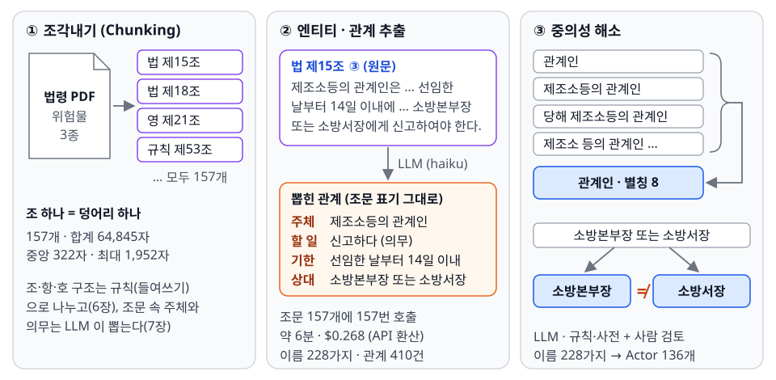
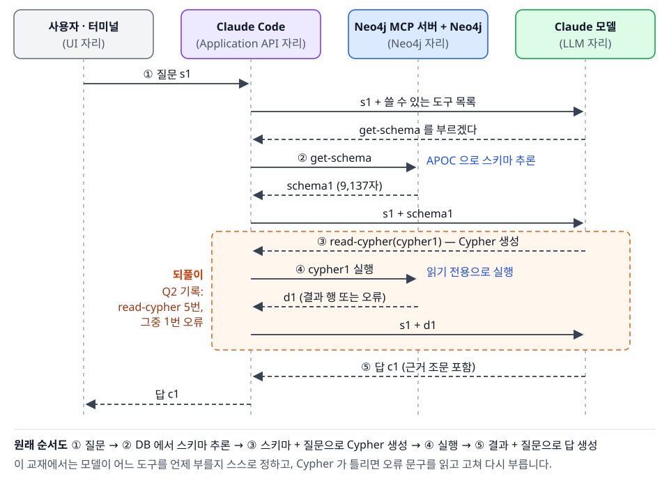
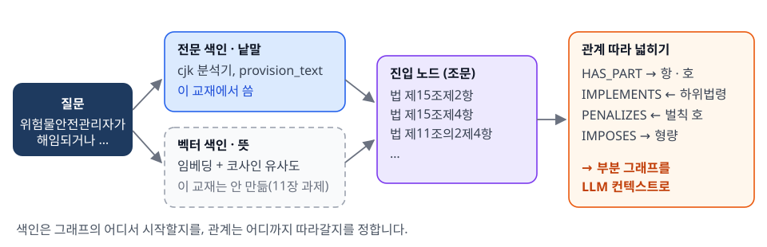

글을 그래프로 바꾸는 적재(조각내기 → 엔티티·관계 추출 → 엔티티 중의성 해소)와 그래프에서 답을 찾는 질의(엔티티 연결 → 스키마를 컨텍스트에 → Cypher 생성 → 실행 → 답 생성)를 단계별로 이 교재의 실제 기록과 함께 살펴봅니다. 질의 순서도에서 애플리케이션이 하던 일은 이 교재에서 Claude Code와 Neo4j MCP 서버가 맡습니다.
학습 내용과 목적#
GraphRAG는 두 과정으로 이루어집니다. 문서를 한 번 그래프로 적재하고, 질문을 받을 때마다 그래프에서 질의해 답을 만듭니다. 정리 노트도 「자연어를 그래프 DB 로 구조화하는 과정(적재)」과 「Graph DB 에서 지식 추출」을 구분해 적었습니다. 이 장에서 두 과정의 단계를 미리 익혀 두면 5~9장에서 Claude Code가 하는 일이 어느 단계에 해당하는지 알 수 있습니다.
적재: 글을 그래프로 바꾸는 3단계#

1. 조각내기(Chunking)#
노트의 설명은 「LLM 의 토큰 크기에 맞춰 일단 문서를 자른다」입니다. 법령에는 조(條)라는 자연스러운 단위가 있어 이 교재에서는 조 하나를 덩어리 하나로 잘랐습니다. 위험물안전관리법 법률·시행령·시행규칙의 조문은 157개로 총 64,845자이며, 덩어리 크기의 중앙값은 322자이고 가장 긴 시행규칙 제65조는 1,952자입니다.
조·항·호·목의 구조는 LLM을 쓰지 않고 PDF의 들여쓰기와 「제N조」 같은 문형으로 나눴습니다(6장). 구조는 규칙으로 정확하게 나누고, 사람이 읽어야 파악할 수 있는 의미만 LLM에 맡기는 분업입니다.
2. 엔티티(노드) · 관계(엣지) 추출#
각 덩어리를 LLM에 보내 엔티티와 관계를 뽑습니다. 이 교재에서는 조문 속 주체·기관과 「누가 → 무엇을 해야 하나 → 언제까지 → 누구에게」를 뽑았습니다. 다음은 법 제15조로 시범 호출한 실제 결과 중 제3항에 해당하는 부분입니다.
{"provision": "제3항", "modality": "의무",
"subject": "제조소등의 관계인",
"action": "행정안전부령으로 정하는 바에 따라 신고하다",
"object": "안전관리자 선임",
"trigger": "제1항 및 제2항에 따라 안전관리자를 선임한 경우",
"deadline": "선임한 날부터 14일 이내",
"recipient": "소방본부장 또는 소방서장"}
157개 조문에 대해 157번 호출했으며, 6개씩 동시에 처리해 약 6분이 걸렸고 API 요금으로 환산하면 $0.268이 들었습니다. 주체·기관 이름 228가지, 용어 215가지, 관계 410건(의무 278, 권한 105, 금지 27)이 나왔습니다. 이 관계는 그래프에서 Norm 노드가 되고, 주체와 상대는 HAS_SUBJECT·ADDRESSED_TO 관계로 Actor 노드에 이어집니다.
3. 엔티티 중의성 해소(Entity Disambiguation)#
노트의 설명은 「분리된 결과에 따라 동의의 엔티티 노드들을 merge(통일)시켜야 함」입니다. 조문마다 따로 뽑으면 같은 대상의 표기가 여러 가지로 나뉩니다. 실제로 「관계인」이 포함된 이름은 18가지(제조소등의 관계인, 관계인, 당해 제조소등의 관계인, 제조소 등의 관계인 …), 「소방서장」이 포함된 이름은 19가지였습니다. 그대로 두면 질문의 「관계인」이 노드 하나가 아니라 여러 노드에 흩어집니다.
노트에는 여러 방법이 소개되어 있습니다. 첫째는 LLM이 같은 뜻의 이름에 같은 번호를 매기게 하는 방법이고, 「돈이 많이 든다」는 단서가 붙어 있습니다. 노트에 실린 프롬프트 원문입니다(오타도 원문 그대로).
disambiguation_prompt = """
#Act as a entity disambiugation tool and tell me which values reference the same entity.
#For example if I give you
##Birds
#Bird
#Ant
##You return to me
##Birds, 1
#Bird, 1
#Ant, 2
##As the Bird and Birds values have the same integer assigned to them, it means that they reference the same entity.
#Now process the following values\n
"""
둘째는 그래프 DB를 사전처럼 써서 동의어를 찾는 방법입니다. 이 교재에서는 법에서 직접 정한 정의와 약칭(제2조 정의, 「이하 "…"라 한다」)을 Term 노드의 대표 이름·별칭으로 넣어 두고, 가운뎃점(ㆍ·)과 공백을 통일한 문자열이 같을 때만 묶었습니다.
| LLM 방식 | 규칙·사전 방식 | |
|---|---|---|
| 이름 228가지를 묶은 결과 | 164묶음 | 217묶음 |
| 시간 · 비용 | 1번 호출 94.9초 · $0.0156 | 0.018초 · 없음 |
| 잘 처리한 것 | 소방서장 / 관할소방서장 / 관할 소방서장을 한 묶음으로 | 탱크시험자 / 탱크안전성능시험자처럼 법에서 정한 약칭 |
| 잘못 처리한 것 | 관계인 = 관계자, 대리자 = 대리인을 같은 것으로 처리 | 표기가 조금만 달라도 못 묶음 |
두 방법이 똑같이 묶은 이름 쌍은 8개뿐이었습니다. 이 교재에서는 두 결과를 합친 뒤 사람이 검토해 Actor 136개로 정리했습니다. 이 과정은 7장에서 따라 합니다.
질의: 그래프에서 답을 찾는 5단계#
노트의 순서도는 네 참여자(UI, 애플리케이션 API, Neo4j, LLM) 사이에서 다음과 같이 진행됩니다. 질문을 받으면 DB에서 스키마를 추론하고, 스키마와 질문으로 LLM에게 Cypher를 만들게 하고, 그 Cypher를 DB에서 실행하고, 결과와 질문을 LLM에 넘겨 답을 만듭니다. 이 교재에서는 다음 구성 요소가 각각의 역할을 맡습니다.

노트에 코드 링크가 있는 LangChain의 Cypher 체인은 애플리케이션이 순서를 정해 스키마 → Cypher 생성 → 실행 → 답 생성 단계를 한 번씩 호출합니다. Claude Code에서는 모델이 MCP 도구 목록을 보고 어느 도구를 언제 호출할지 스스로 정합니다. Cypher가 틀리면 오류 문구를 읽고 수정해 다시 호출하고, 결과가 부족하면 추가로 조회합니다.
아래는 골든 퀘스천 2번을 헤드리스로 질문한 1회차 기록입니다. 도구는 Neo4j MCP의 get-schema·read-cypher 두 개만 허용했고(파일 읽기·셸은 비활성화), MCP 호출 6번(오류 1번), 30.4초, 7턴이 걸렸습니다. 모델이 쓴 Cypher와 문장은 실행할 때마다 달라질 수 있습니다.
① 엔티티 연결: 질문 속 말을 그래프에 연결하기#
엔티티 연결(Entity Linking)은 질문의 낱말이 그래프의 어느 노드나 속성을 가리키는지 정하는 일입니다. 이 실행에서 모델은 별칭 노드나 전문 색인을 쓰지 않고, 질문에서 고른 낱말을 부분 문자열로 사용해 조문 내용과 Norm 속성에 연결했습니다.
| 질문 속 낱말 | 그래프 쪽 조건(실제 Cypher에서) | 검색 결과 |
|---|---|---|
| 위험물안전관리자 | Norm의 object, 조문의 text에 CONTAINS '안전관리자' |
더 짧은 「안전관리자」로 찾아 약칭과 정식 이름을 함께 찾음 |
| 해임되거나 퇴직하면 | Norm의 trigger에 CONTAINS '해임', '퇴직' |
법 제15조제2항의 Norm(기한 「해임하거나 퇴직한 날부터 30일 이내」) |
| 관계인 | 조건에 쓰지 않음 | 반환된 Norm의 주체가 Actor 「관계인」(적재 때 9가지 표기를 합친 노드) |
| 어떤 절차 | 조문 pid를 STARTS WITH로 직접 지정 |
앞선 결과의 번호를 따라 시행규칙 제53조·제54조 조회 |
별칭 키와 전문 색인으로 「위험물안전관리자」를 Term·Actor 노드 「안전관리자」에 연결하는 방법은 7장에서 직접 실행해 봅니다.
② 스키마를 컨텍스트에: get-schema#
모델은 먼저 get-schema를 호출했습니다. Neo4j MCP 서버가 레이블마다 표본 100개(기본값)를 추출해 APOC으로 만든 스키마이고, 길이는 9,137자입니다. 노드 레이블 11종, 관계 타입 15종과 속성 타입·관계 방향이 들어 있습니다. 그중 Norm 항목입니다(줄 바꿈만 했습니다).
{"key":"Norm","value":{"type":"node",
"properties":{"action":"STRING","deadlineKind":"STRING",
"deadlineText":"STRING","deadlineUnit":"STRING",
"deadlineValue":"INTEGER","extractedBy":"STRING",
"modality":"STRING","name":"STRING","normId":"STRING",
"object":"STRING","recipientText":"STRING","reviewed":"BOOLEAN",
"subjectText":"STRING","trigger":"STRING","uncheckedFields":"LIST"},
"relationships":{
"ADDRESSED_TO":{"direction":"out","labels":["Actor"]},
"BASED_ON":{"direction":"out",
"labels":["Article","Provision","Item","Paragraph","SubItem"]},
"HAS_SUBJECT":{"direction":"out","labels":["Actor"]}}}}
모델은 이 내용만 보고 Norm에 trigger·deadlineText가 있고, BASED_ON으로 조문에 연결된다는 것을 파악합니다.
③ Cypher 생성: 틀린 시도 포함#
첫 시도에서는 모든 노드의 모든 속성을 문자열로 검색하는 질의를 실행했지만 오류가 났습니다.
MATCH (n) WHERE any(k IN keys(n) WHERE toString(n[k]) CONTAINS '안전관리자')
AND any(k IN keys(n) WHERE toString(n[k]) CONTAINS '해임')
RETURN labels(n) AS labels, properties(n) AS props LIMIT 40
failed to execute read query: Neo4jError: Neo.ClientError.Statement.TypeError (Invalid input for function 'toString()': Expected a String, Float, Integer, Boolean, Temporal or Duration, got: StringArray[영])
목록 속성(aliases, amendedOn 등)에 toString()을 쓸 수 없어서입니다. 모델은 스키마를 다시 보고 레이블과 속성을 골라 질의를 수정했습니다. 다음은 의미층(Norm)을 검색한 질의입니다(RETURN의 열은 일부 줄였습니다).
MATCH (n:Norm)-[:BASED_ON]->(p)
WHERE (n.trigger CONTAINS '해임' OR n.trigger CONTAINS '퇴직'
OR n.trigger CONTAINS '선임' OR n.action CONTAINS '선임'
OR n.object CONTAINS '안전관리자')
OPTIONAL MATCH (n)-[:HAS_SUBJECT]->(s:Actor)
OPTIONAL MATCH (n)-[:ADDRESSED_TO]->(r:Actor)
RETURN n.normId, n.name, n.modality, n.trigger, n.deadlineText,
n.reviewed, s.name AS subject, r.name AS recipient,
p.citation, p.isCurrent, p.text
이어서 조문 내용에서 「안전관리자」와 「해임·퇴직·선임」이 함께 나오는 조문을 찾고, 법령 목록으로 판본과 시행일을 확인하고, 시행규칙 제53조·제54조와 벌칙(제36조·제39조)을 pid로 직접 조회했습니다. 헤드리스 15회 중 10회에서 이런 Cypher 오류가 한두 번씩 났고, 모델이 모두 수정해 다시 실행했습니다.
④ 실행: 반환된 부분 그래프#
| 호출 | 반환된 결과 | 글자 수 |
|---|---|---|
get-schema |
스키마 | 9,137 |
read-cypher 1 |
오류 문구 | 206 |
read-cypher 2 |
Norm 30행(근거 조문 원문 포함) | 23,208 |
read-cypher 3 |
조문 19개 | 7,536 |
read-cypher 4 |
법령 179개(적재한 9 + 조문이 인용한 외부 법령) | 34,774 |
read-cypher 5 |
하위법령 절차와 제재 17행 | 5,005 |
모두 합쳐 약 8만 자가 컨텍스트에 들어갔습니다. 2번 호출의 핵심 행입니다(조문 원문 열은 뺐습니다).
{"n.normId": "위험물안전관리법:제15조:제2항#1",
"n.modality": "의무",
"n.name": "다시 안전관리자를 선임하다",
"n.trigger": "안전관리자를 해임하거나 안전관리자가 퇴직한 때",
"n.deadlineText": "해임하거나 퇴직한 날부터 30일 이내",
"n.reviewed": false,
"subject": "관계인", "recipient": null,
"p.citation": "위험물안전관리법 제15조제2항", "p.isCurrent": true}
관계로 나타내면 다음과 같은 부분 그래프입니다. Norm(제15조②)은 BASED_ON으로 법 제15조제2항에, Norm(제15조③)은 법 제15조제3항과 ADDRESSED_TO로 소방본부장·소방서장에 이어집니다. 시행규칙 제53조제1항은 IMPLEMENTS로 법 제15조제3항에 연결되고, 법 제36조제6호와 제39조제1항제5호는 PENALIZES로 제15조의 항을 가리킵니다.
⑤ 답 생성#
모델은 질문과 반환된 결과를 바탕으로 답을 썼습니다. 첫머리와 끝맺음입니다.
해임·퇴직한 날부터 30일 이내에 다시 선임해야 하고, 선임한 뒤에는 선임한 날부터 14일 이내에 소방본부장 또는 소방서장에게 선임신고를 해야 합니다. 모두 그래프에서 현행(
isCurrent: true)으로 표시된 조문입니다.…
기한 값(30일·14일)은 Norm 노드에서 찾은 뒤 조문 원문과 대조해 일치함을 확인했습니다. 해당 Norm 노드들은 아직
reviewed: false상태입니다.
LLM이 뽑은 Norm 값만 믿지 않고 함께 가져온 조문 원문으로 확인했다고 밝힌 점에 주목하세요. 답 전체(재선임 기한, 신고 서식과 첨부서류, 대리자, 제재, 기준 시점)는 9장에서 살펴봅니다.
적재 때 엔티티 중의성 해소와 질문 때 엔티티 연결#
둘 다 「같은 것을 알아보는」 일이라 헷갈리기 쉽지만, 수행 시점과 결과가 다릅니다.
| 엔티티 중의성 해소(적재 때) | 엔티티 연결(질문 때) | |
|---|---|---|
| 언제 | 그래프를 만들 때 한 번 | 질문을 받을 때마다 |
| 입력 | 조문에서 뽑은 여러 표기 | 질문 속 낱말 |
| 하는 일 | 같은 대상인지 판정해 노드 하나로 합침 | 기존 노드 중 어느 노드에 연결할지 선택 |
| 그래프 | 바뀜(합친 결과가 고정됨) | 바뀌지 않음 |
| 방법 | LLM, 규칙·사전 + 사람 검토 | 별칭 키, 전문 색인, 부분 문자열 조건 |
| 틀리면 | 고쳐서 다시 적재 | 다음 질의에서 다시 찾음 |
| 이 교재의 예 | 관계인 9가지 표기 → Actor 「관계인」 하나 | 질문의 「관계인」 → Actor 「관계인」 |
두 과정은 서로 연결됩니다. 질문의 「관계인」 한 낱말로 제15조의 의무가 한꺼번에 나오는 것은 적재 때 「제조소등의 관계인」 같은 표기를 Actor 「관계인」 하나로 합쳐 두었기 때문입니다.
벡터 색인과의 혼합#
노트는 질의의 장점으로 「Multi-hop Query 로 가능하던 Query 를 한번에 할 수 있다」를 들고, 이어서 임베딩 벡터와의 혼합을 언급했습니다. 그래프 질의는 어디서 출발할지 알아야 시작할 수 있습니다. 질문의 낱말이 조문 표기와 다르거나 조 번호를 모를 때는 색인으로 출발점을 찾고, 그곳에서 관계를 따라 검색 범위를 넓힙니다.

Neo4j에는 두 종류의 검색 색인이 있습니다.
- 전문 색인(full-text index): 낱말로 찾습니다. 이 교재에서는 조문·용어·Norm에
cjk분석기로 전문 색인 세 개를 만들었습니다(한국어는 기본 분석기로 「선임」이 「선임하여야」를 찾지 못합니다. 4장). 7장에서 골든 퀘스천 2번 문장 전체로 조문 색인을 조회하고, 앞서 찾은 용어를 언급하는 조문의 순위를 높였더니 법 제15조제2항(점수 31.86), 제15조제4항(24.67), 제11조의2제4항(22.81) 순으로 나왔습니다. - 벡터 색인(vector index): 임베딩의 코사인 유사도로 뜻이 가까운 노드를 찾습니다. 이 교재의 Neo4j 5.26에도
db.index.vector.queryNodes프로시저가 있지만, 이 교재에서는 벡터 색인을 만들지 않았습니다. Cypher 매뉴얼에 따른 생성 문법은 다음과 같습니다.
CREATE VECTOR INDEX provision_embedding IF NOT EXISTS
FOR (p:Provision) ON p.embedding
OPTIONS {indexConfig: {
`vector.dimensions`: 1024,
`vector.similarity_function`: 'cosine'
}}
벡터 색인으로 진입 노드를 찾은 뒤 PENALIZES·IMPLEMENTS를 따라가면, 벡터 검색이 놓친 벌칙 조문을 관계로 보충할 수 있습니다. 반대로 벡터 검색만 쓰는 기본 RAG가 같은 골든 퀘스천에서 무엇을 찾고 놓치는지는 10장에서 측정합니다. 그래프에 벡터 색인을 더하는 일은 11장의 확장 과제입니다.
확인 문제#
노트의 순서도에서 「Application API」가 하던 일은 이 교재에서 누가 하나요?
Claude Code가 합니다. 질문을 받아 모델에 넘기고, 모델이 고른 MCP 도구(get-schema, read-cypher)를 Neo4j MCP 서버에 보내고, 반환된 결과를 다시 모델에 넘깁니다. 다른 점은 순서를 애플리케이션 코드가 정하지 않고 모델이 정한다는 것입니다. 그래서 Cypher가 틀리면 오류 문구를 읽고 수정해 다시 호출할 수 있습니다.
LLM 중의성 해소가 「관계인」과 「관계자」를 한 묶음으로 만든 이유는 무엇이고, 어떻게 바로잡았나요?
LLM은 이름 목록만 받아서 조문 문맥과 법이 정한 정의를 모른 채, 뜻이 비슷해 보이는 낱말을 합쳤습니다. 이 교재에서는 규칙·사전 방식의 결과와 나란히 비교한 뒤 사람이 「관계자는 관계인이 아니니 떼어 내라」고 지시해 따로 두었습니다(7장).
질문 때 엔티티 연결을 아무리 잘해도, 적재 때 중의성 해소가 안 되어 있으면 어떤 일이 생기나요?
질문의 「관계인」이 노드 하나에 연결되어도 「제조소등의 관계인」「당해 제조소등의 관계인」처럼 따로 남은 노드에 연결된 의무는 나오지 않습니다. 질의 단계에서 표기를 하나하나 모두 알아맞혀야 하므로 빠뜨리기 쉽습니다. 적재 때 합쳐 두어야 한 낱말로 관련 의무를 모두 모을 수 있습니다.
참고 자료#
- Creating a Knowledge Graph From Video Transcripts With GPT-4 — https://medium.com/neo4j/creating-a-knowledge-graph-from-video-transcripts-with-gpt-4-52d7c7b9f32c (노트에서 중의성 해소 프롬프트 바로 아래에 있는 글)
- ai graph db disambiguation (YouTube) — https://youtu.be/eirBMLpAtcA
- Constructing knowledge graphs from text using OpenAI functions — https://bratanic-tomaz.medium.com/constructing-knowledge-graphs-from-text-using-openai-functions-096a6d010c17
- LangChain Cypher 체인 코드 — https://api.python.langchain.com/en/latest/_modules/langchain/chains/graph_qa/cypher.html
- Vector search indexes — Cypher Manual — https://neo4j.com/docs/cypher-manual/current/indexes/semantic-indexes/vector-indexes/
- Harnessing Large Language Models with Neo4j — https://medium.com/neo4j/harnessing-large-language-models-with-neo4j-306ccbdd2867
- neo4j/naLLM (오픈소스) — https://github.com/neo4j/naLLM